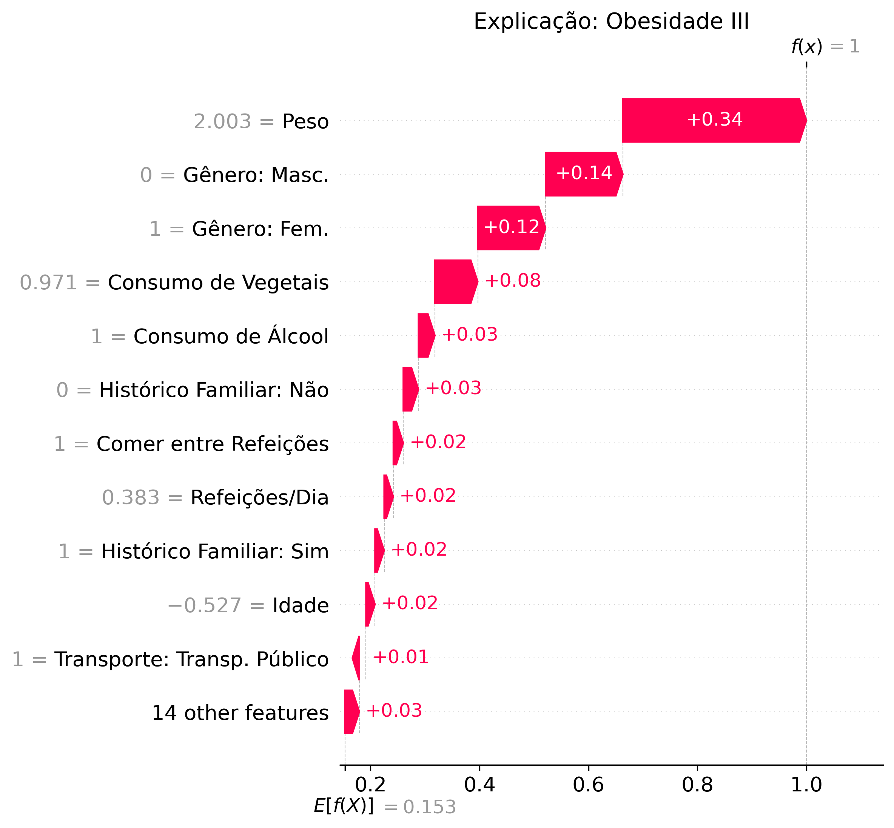

Inteligência e Modelagem
Inteligência e Modelagem
Nesta seção, abrimos a "caixa preta" do sistema. Explicamos como o algoritmo toma decisões e qual a confiabilidade esperada.
1. O Desafio: Além do Binário
A obesidade não é apenas "Sim" ou "Não". É um espectro. O modelo foi treinado para identificar 7 categorias distintas de classificação corporal, permitindo uma triagem muito mais precisa:
 Peso Insuficiente
Peso Insuficiente Peso Normal
Peso Normal Sobrepeso (Nível I e II)
Sobrepeso (Nível I e II) Obesidade (Tipo I, II e III)
Obesidade (Tipo I, II e III)
2. O Algoritmo: Random Forest
O modelo escolhido foi o Random Forest Classifier (Floresta Aleatória) por ser um algoritmo robusto que combina múltiplas árvores de decisão.
Por que Random Forest?
Diferente de modelos lineares, ele entende relações complexas (ex: comer pouco mas ser sedentário vs. comer muito mas ser atleta). Além disso, possui alta resistência a overfitting quando bem calibrado.
O que define o risco? (Feature Importance)
Antes de olhar os acertos, é importante entender o que o modelo prioriza. O gráfico abaixo mostra as variáveis com maior peso na decisão matemática:

3. Performance Real (Dados de Teste)
É crucial ser transparente sobre a precisão. Nos testes realizados com 20% dos dados (que o modelo nunca viu antes), obtivemos:
| Métrica | Resultado | O que significa? |
|---|---|---|
| Acurácia | 94% | De cada 100 pacientes, o sistema acerta a categoria exata de 94. |
| F1-Score | 0.93 | O equilíbrio entre precisão e capacidade de detecção é muito alto. |
Detalhamento por Classe
Aqui vemos a performance isolada. Note como o modelo é extremamente preciso nas categorias extremas (Magreza e Obesidade III), indicadas pelas cores mais verdes.

Onde o modelo confunde? (Matriz de Confusão)
A matriz abaixo cruza o Valor Real (Eixo Y) com a Predição do Modelo (Eixo X). A linha diagonal escura representa os acertos.

Análise de Erros
A matriz mostra que a maior parte dos erros (manchas azuis fora da diagonal) ocorre entre categorias vizinhas (ex: classificar Sobrepeso I como Sobrepeso II). Erros graves, como confundir Obeso com Magro, são virtualmente inexistentes.
4. Explicabilidade (XAI com SHAP)
Enquanto os gráficos anteriores mostram a performance geral, o SHAP Waterfall explica a decisão para um paciente específico.
O gráfico abaixo mostra matematicamente o "cabo de guerra" entre os hábitos do paciente:

Como ler este gráfico?
- Barras Vermelhas (Direita): Fatores que aumentaram o risco (puxaram a probabilidade para cima).
- Exemplo: No gráfico, o
Histórico Familiare oPesoalto empurram o diagnóstico para Obesidade.
- Exemplo: No gráfico, o
 Barras Azuis (Esquerda): Fatores que diminuíram o risco (puxaram a probabilidade para baixo).
Barras Azuis (Esquerda): Fatores que diminuíram o risco (puxaram a probabilidade para baixo).- Exemplo: O hábito de não fumar (
Fumante: Não) ou comer vegetais atuou como proteção.
- Exemplo: O hábito de não fumar (
O valor E[f(x)] na base é a probabilidade média da população. O valor f(x) no topo é a probabilidade final deste paciente (ex: 95% de chance de ser Obeso).